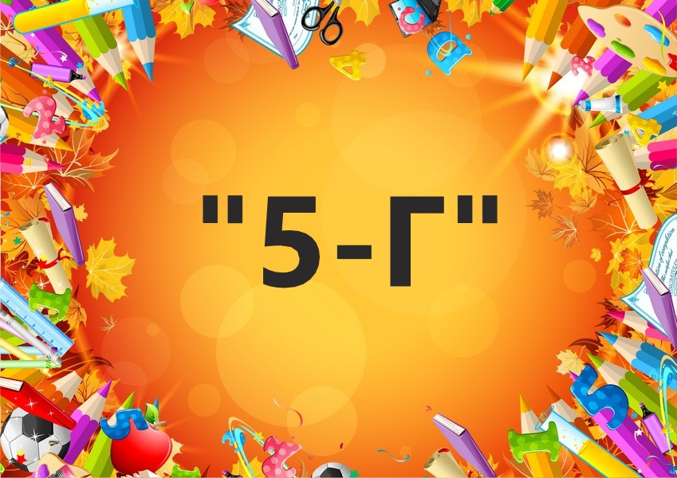

Данный сайт был создан для класса "5-Г" школы №1056.
На этом сайте вы найдёте:
- ID и пароли всех конференций
- Домашнее задание
- Расписание уроков
- сайты ГДЗ и т.д
||
||
||
||
||
\/
Меню ссылок - это набор полезных ссылок которые могут вам помочь